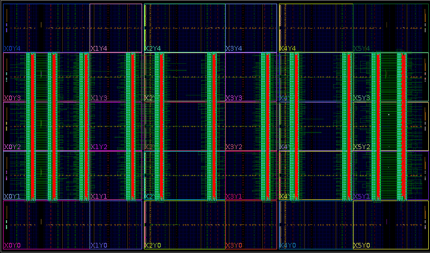

RWRoute Partial Routing¶
Routes an example design (e.g. “picoblaze_partial.dcp”).
This example was designed to show the way to use RWRoute in the partial mode for wirelength-driven routing and validate routing results with Vivado.
Steps to Run¶
Download the example
picoblaze_partial.dcpdesign:
wget http://www.rapidwright.io/docs/_downloads/picoblaze_partial.dcp
Invoke RWRoute via gradle (this will ensure code is compiled before running):
rapidwright PartialRouter picoblaze_partial.dcp picoblaze_partial_routed.dcp --nonTimingDriven
Please refer to the documentation Javadoc and code for more implementation details. The Java source code for RWRoute is located in: src/com/xilinx/rapidwright/rwroute/.
Example Output¶
Example output using the picoblaze_partial.dcp design is included below:
==============================================================================
== RWRoute ==
==============================================================================
==============================================================================
== Reading DCP: picoblaze_partial.dcp ==
==============================================================================
XML Parse & Device Load: 2.365s
EDIF Parse: 1.108s
Read XDEF Header: 0.027s
Read XDEF Caches: 0.148s
Read XDEF Placement: 5.297s
Read XDEF Routing: 3.486s
------------------------------------------------------------------------------
[No GC] *Total*: 12.430s
==============================================================================
== Route Design ==
==============================================================================
------------------------------------------------------------------------------
Generated RRG Routed Nodes With Total Run
Iteration RRG Nodes Time (s) Connections Overlaps Time (s)
--------- ---------------------- ----------- ---------- ----------------
1 2705791 13.74 12144 10146 16.63
2 689195 1.94 6496 5093 5.14
3 482106 1.41 4037 1604 3.84
4 292903 0.94 1609 298 2.49
5 176537 0.54 336 45 1.62
6 178330 0.61 59 10 1.20
7 261196 1.40 12 2 2.83
8 250050 1.75 3 0 2.65
------------------------------------------------------------------------------
INFO: Route 0 direct connections
INFO: No PIP overlaps
==============================================================================
== Statistics ==
==============================================================================
Total wirelength: 101840
Route design: 41.73s
├─ Initialization: 2.10s
└─ Routing: 39.62s
==============================================================================
Write EDIF: 0.209s
Writing XDEF Header: 1.744s
Writing XDEF Placement: 5.939s
Writing XDEF Routing: 3.902s
Writing XDEF Finalizing: 0.246s
Writing XDC: 0.008s
------------------------------------------------------------------------------
[No GC] *Total*: 12.048s
INFO: Write routed design
picoblaze_partial_routed.dcp
The output contains three main sections regarding reading the design checkpoint, RWRoute processing info, and routing statistics.
Validation with Vivado¶
If you would like to visualize the original design shown in Vivado device view, run Vivado in its GUI mode:
vivado
To load the original checkpoint, run the following command in the Tcl console:
open_checkpoint picoblaze_partial.dcp
After the original checkpoint is loaded, to highlighted unrouted nets, run:
highlight_objects -color red [get_nets * -filter {ROUTE_STATUS == UNROUTED}]
As a result, the device view of Vivado will show:
{kind=link}
Nets highlighted in red are unrouted.
To check the route status of the origial design checkpoint, run:
report_route_status
The design route status is as follows:
Design Route Status
: # nets :
------------------------------------------- : ----------- :
# of logical nets.......................... : 147009 :
# of nets not needing routing.......... : 58434 :
# of internally routed nets........ : 47124 :
# of nets with no loads............ : 11132 :
# of implicitly routed ports....... : 178 :
# of routable nets..................... : 88575 :
# of unrouted nets................. : 12144 :
# of fully routed nets............. : 76431 :
# of nets with routing errors.......... : 0 :
------------------------------------------- : ----------- :
It is shown that there are 12144 unrouted nets.
To load the routed design checkpoint into Vivado and validate the routed design by RWRoute, run:
open_checkpoint picoblaze_partial_routed.dcp
report_route_status
{kind=link}
Design Route Status
: # nets :
------------------------------------------- : ----------- :
# of logical nets.......................... : 147009 :
# of nets not needing routing.......... : 58434 :
# of internally routed nets........ : 47124 :
# of nets with no loads............ : 11132 :
# of implicitly routed ports....... : 178 :
# of routable nets..................... : 88575 :
# of fully routed nets............. : 88575 :
# of nets with routing errors.......... : 0 :
------------------------------------------- : ----------- :
The design is successfully routed, as all the routable nets are fully routed.